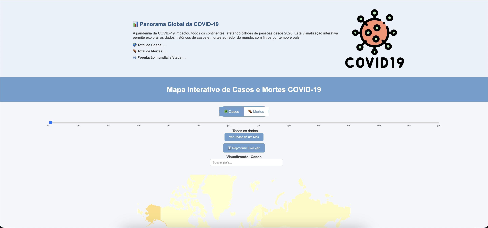

Visualização Interativa e Exploratória de Dados Globais da COVID-19
Membros da Equipe:
Mariana Oliveira — EMAP - FGV Rio de Janeiro

Resumo
Este projeto apresenta uma plataforma web interativa para visualização,
análise e contextualização histórica da pandemia de COVID-19 ao redor do
mundo. A ferramenta permite aos usuários explorar visualmente dados
epidemiológicos globais, séries temporais semanais, informações
demográficas e contextuais de cada país, além de conter uma linha do
tempo histórica e uma galeria ilustrativa.
Artigo Completo
📄 Acessar o Artigo (PDF)
Vídeo de Demonstração
▶️ Assistir Demonstração
Execução do Software
- Clone o repositório ou baixe os arquivos localmente.
- Abra um terminal na pasta do projeto.
- Execute um servidor local (exemplo com Python):
python -m http.server 8000
Acesse no navegador: http://localhost:8000
Materiais Adicionais